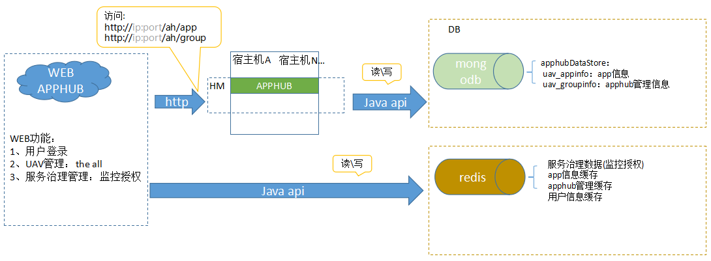

APPHUB主要负责从数据库中读写AppHub相关信息。 
如图所示： WEB AppHub负责WEB功能，包括用户登录、UAV管理、服务治理管理即监控授权等，直接从redis中获取后者向其写入对应的服务治理数据（监控授权）信息，app信息缓存，AppHub管理缓存，用户信息缓存等信息。 HM中AppHub主要对mongodb读写app信息和AppHub管理信息以及apphubDataStore信息。